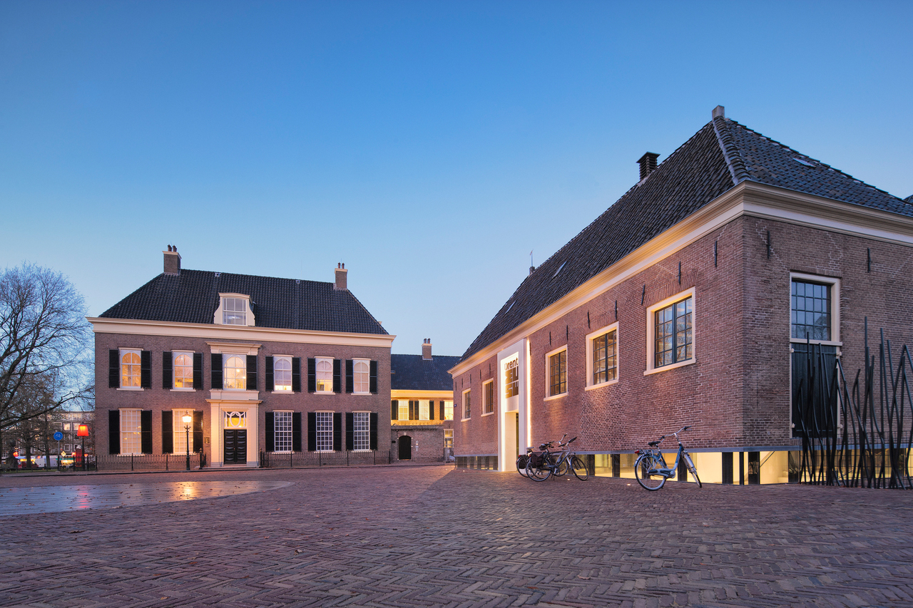
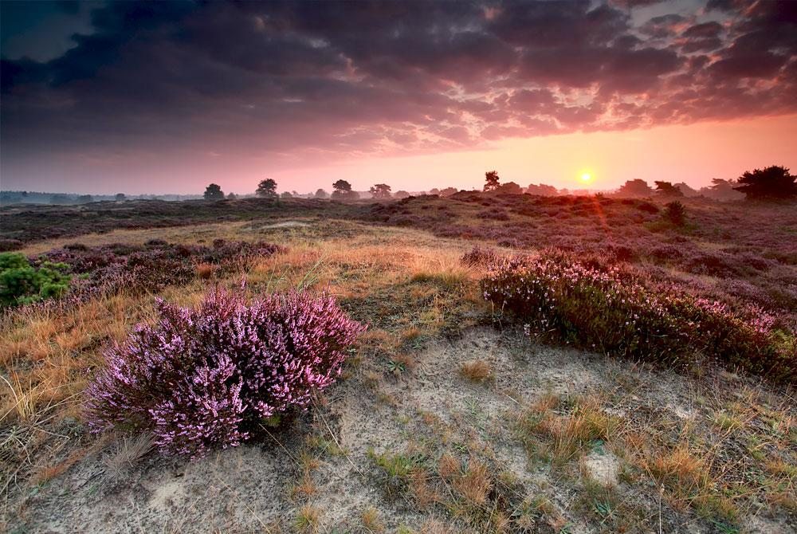

Feitjes
- Assen is de hoofdstad van de provincie Drenthe.
- De stad is wereldwijd bekend door de TT Assen, een jaarlijks MotoGP-evenement.
- Assen kreeg stadsrechten in 1809 van koning Lodewijk Napoleon.
- Het Drents Museum in Assen staat bekend om archeologie en internationale tentoonstellingen.
- Assen is ontstaan rondom het klooster Mariënhave uit de 13e eeuw.
Drents Museum
Het Drents Museum is één van de bekendste musea van Nederland, met toonaangevende tentoonstellingen op het gebied van archeologie, kunst en cultuurgeschiedenis. Het gebouw is een mix van historisch en modern, en ligt op loopafstand van het centrum.
Highlights zijn onder meer de internationaal geprezen archeologische collecties (met veenlijken en vondsten uit de prehistorie), grote overzichtstentoonstellingen en hedendaagse kunst. Het museum beschikt over een sfeervolle museumtuin en een modern paviljoen.
Drentsche Aa
De Drentsche Aa is een uniek nationaal park met kronkelende beekdalen, esdorpen en heidevelden. Het gebied is ideaal voor wandelen en fietsen en ligt vlak bij Assen, met goed gemarkeerde routes en prachtige uitzichten.
Dankzij de kleinschalige cultuurlandschappen en het natuurlijke verloop van de beek voelt het alsof de tijd hier langzamer gaat. In elk seizoen biedt het landschap iets anders: bloeiende heide in de nazomer, mistige ochtenden in de herfst en frisgroene weiden in het voorjaar.